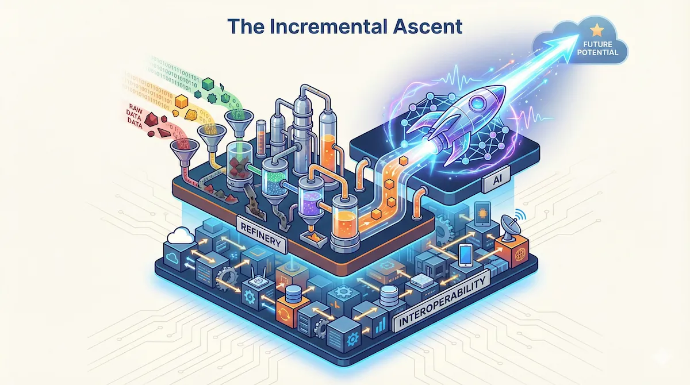
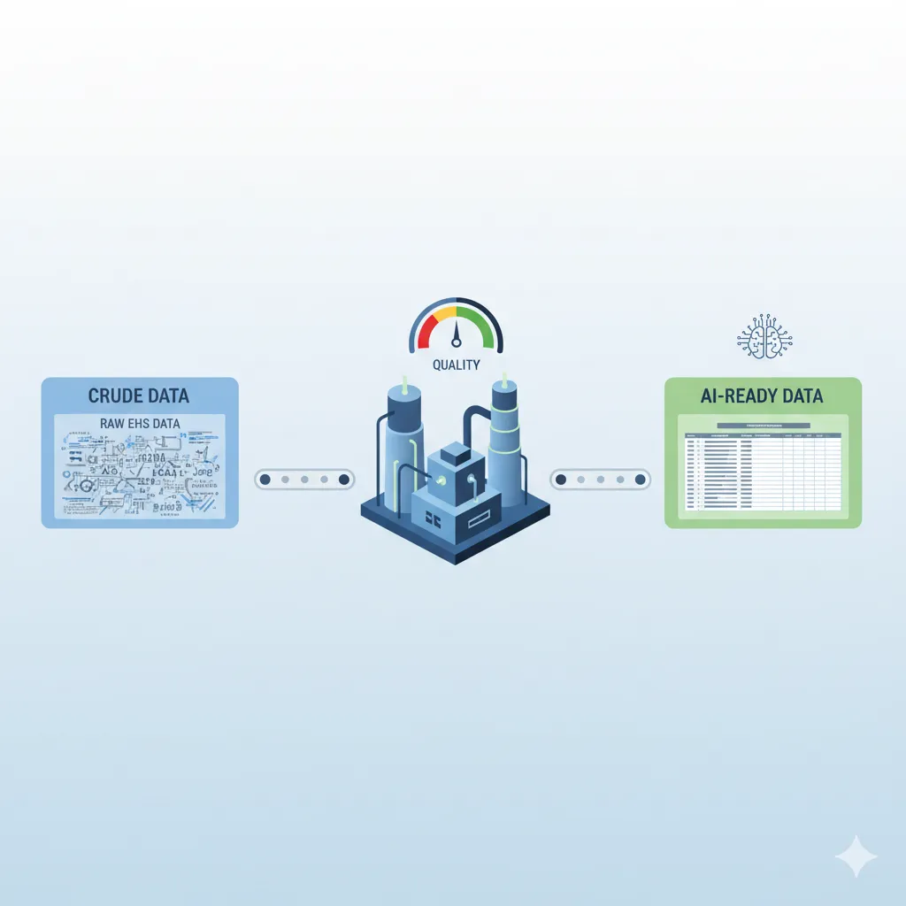
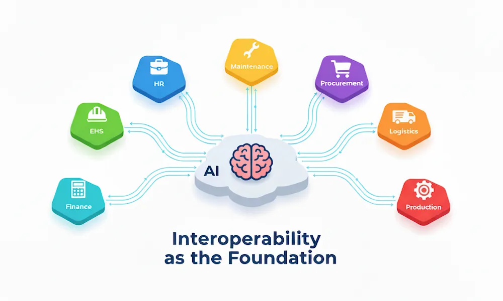
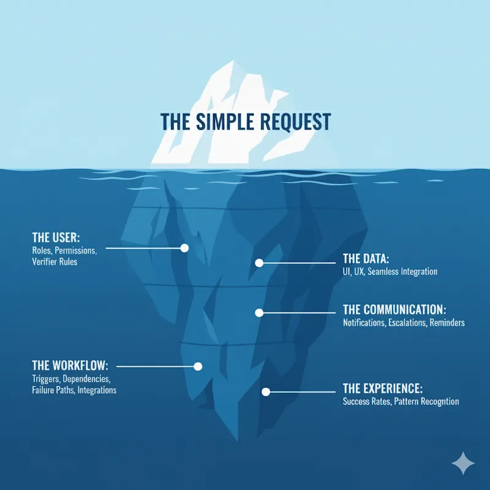

Writing
On EHS data architecture, SafetyTech product strategy, and applied data science.

Apr 2026
Validating Leading Indicators: Auditing EHS Data for Predictive Signal
Most EHS programmes track leading indicators by convention, not validation. Applies lag-correlation analysis to a 36-month dataset to classify each metric as Leading, Forewarning, Concurrent, or Weak.
Read →Feb 2026
Structuring Unstructured EHS Data with Targeted Extraction Frameworks
Incident narratives, audit notes, near-miss reports — none of it is machine-readable by default. How targeted extraction frameworks turn unstructured text into schema-constrained, queryable data.
Read →Jan 2026
The Feature Trap in EHS Software Selection
Procurement teams optimise for feature count. Frontline workers abandon systems that don't fit how they actually work. Why feature-led selection is the most reliable way to buy the wrong platform.
Read →
Dec 2025
The EHS AI Launchpad: Escaping Pilot Purgatory
Most EHS AI projects stall after the proof of concept. A framework for moving from a single high-value use case to a production system without getting stuck in perpetual pilot mode.
Read →
Nov 2025
The EHS Data Refinery: From Crude Data to AI-Ready Intelligence
Raw EHS data is not AI-ready. The governance, cleansing, and labelling decisions that determine whether a dataset can support a predictive model — or just a dashboard.
Read →
Nov 2025
Closing the AI Readiness Gap: Interoperability as the Foundation
Predictive safety analytics require signals from EHS, HR, and Maintenance systems together. Why siloed data architecture is the actual blocker — not the algorithm.
Read →Oct 2025
The AI Readiness Gap in EHS: From Hype to High-Value Asset
Three misconceptions about how AI gets deployed in enterprise EHS — and why closing the gap between executive vision and operational reality requires a different starting point.
Read →
Sep 2025
The Requirements Iceberg
Every EHS software request that looks simple conceals a set of architectural decisions nobody documented. Why the visible part of requirements is never the expensive part.
Read →Jun 2025
EHS for Enterprises: Tailored Strategies for Enterprise Success
Multi-site EHS deployments fail when the architecture is built for one site and scaled by replication. How scalability, ERP integration, and global data governance need to be designed in from the start.
Read →
Jun 2025
Measuring Success: Real-World ROI of EHS Software
ROI calculations for EHS software are mostly post-rationalisation. What to actually measure, when to measure it, and why the common mistakes in quantification cause programmes to look like failures.
Read →Jun 2025
Strategic Implementation: A Phased Approach to EHS Software Deployment
Phased deployment is not the same as slow deployment. How to sequence needs analysis, vendor selection, change management, and post-launch monitoring so each phase creates conditions for the next.
Read →
Jun 2025
Human Element: Culture and Leadership in EHS Software Success
EHS software adoption fails when the human system isn't designed alongside the technical one. How culture, leadership visibility, and user buy-in determine whether a platform gets used or worked around.
Read →
Jun 2025
EHS Software: More Than Just a Technological Fix
Buying EHS software is not an EHS strategy. The decisions that matter happen before procurement — and the ones that kill implementations happen the day after go-live.
Read →May 2025
Getting Trapped While Controlling Hazards
Hazard controls introduce their own failure modes. Error traps — systemic conditions that make mistakes more likely, not less — are often built into the control itself.
Read →May 2025
How Machine Learning Can Improve Workplace Incident Classification
Manual incident classification is inconsistent and slow. How ML models trained on historical EHS data can standardise classification at scale — and what the data requirements actually look like.
Read →May 2025
Leveraging Diagnostic Analytics to Enhance Workplace Safety
Recording incidents is not analysis. Diagnostic analytics — identifying patterns, correlations, and root causes across incident data — requires a different data model than most EHS systems are built with.
Read →May 2025
A Concise Guide to ESAW Methodology for Recording Workplace Accidents
ESAW is the classification standard behind how workplace accidents get coded, compared, and reported across EU member states. What it covers and where it creates measurement blind spots.
Read →May 2025
Analysis and Planning for EHS Software Implementation
The analysis and planning phase is where most implementations win or lose. Needs assessment, objective-setting, and stakeholder alignment done before vendor selection — not after.
Read →
May 2025
Understanding the Imperative for EHS Software Implementation
The case for EHS software is not regulatory compliance. It's that compliance-driven systems generate the wrong data. What the strategic argument actually looks like when built on outcomes rather than obligations.
Read →